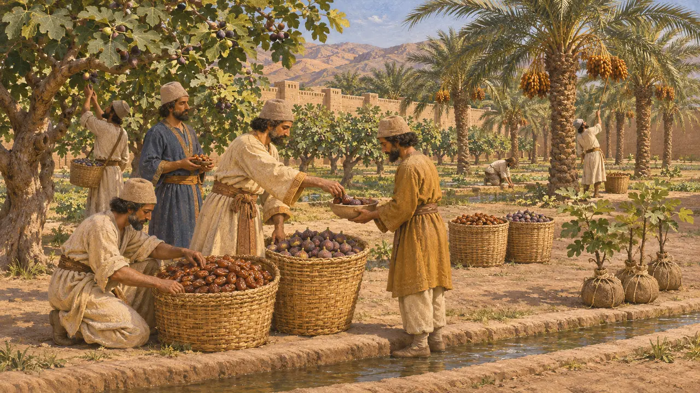
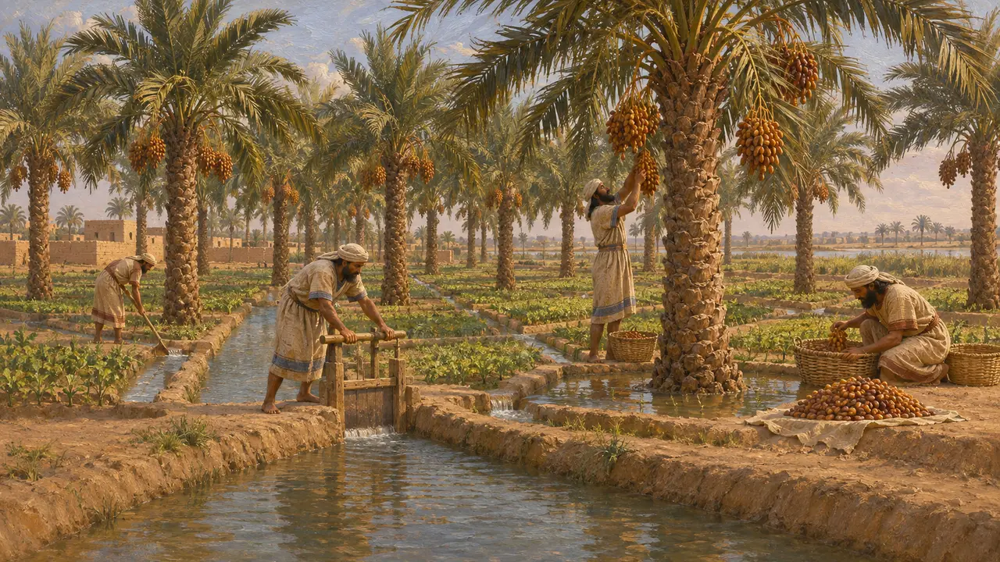
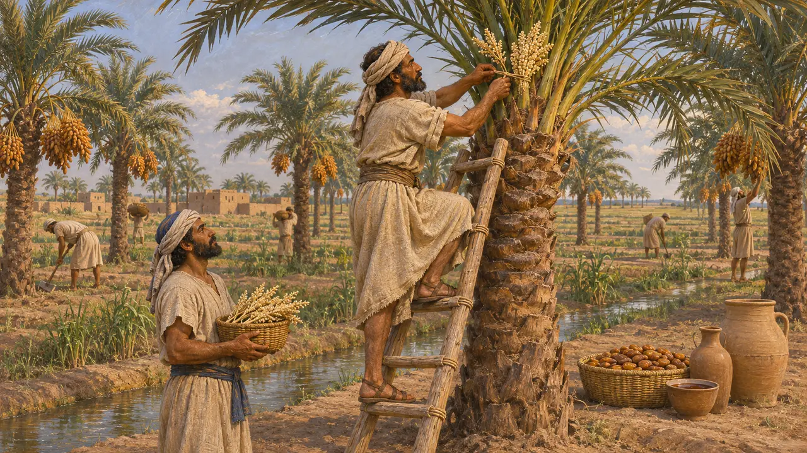
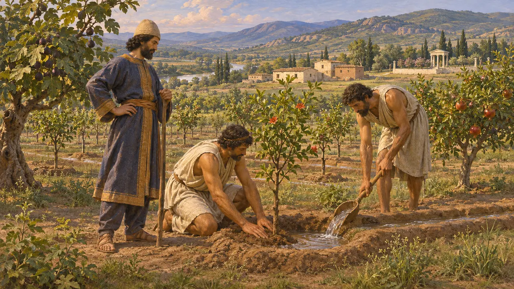
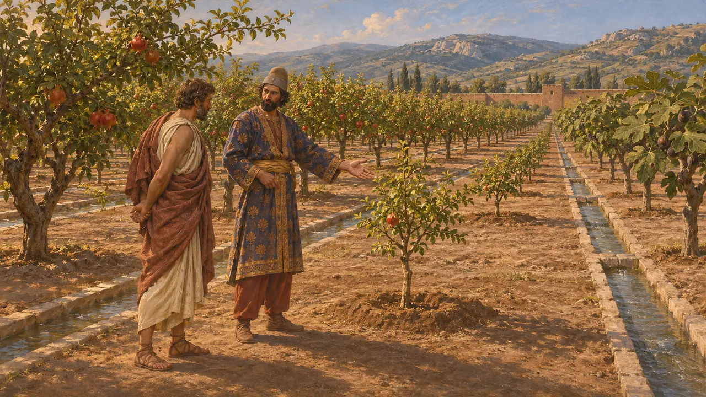

果樹園
アケメネス朝の灌漑果樹園、紀元前6~5世紀
帝国の各地で、果樹は灌漑された土地に育った。バビロニアではナツメヤシ、ペルシスではイチジクや葡萄などの果物、王領地では様々な果樹の混ざった園があった。宮廷の記録には、配給品として、また王の食料としての果物が見える。ギリシアの著述家や、真偽の疑われる王の書簡は植樹を善政と結びつけており、果樹園は実際の農地であると同時に、王が国土を慈しむしるしでもあった。
ゲームでは： ゲームでは果樹園は運河から水を引いた果樹が並ぶ食料施設で、長老の家はその果物を求めます。これは簡略化であり、実際にはペルシスの高地の所領でも、渓流から引いた水路で果樹園が営まれていました。

ペルセポリス文書に見える果物
同時代の記録紀元前509年頃から493年にかけてエラム語で書かれたペルセポリス城砦文書には、王の経済の中を流通する果物が記録されている。ナツメヤシの実やイチジクは、労働者への配給としても、王家や貴人の家政への供給品としても登場する。所領に植える果樹を扱ったとみられる文書もあり、その中には文書がpartetašと呼ぶ塀に囲まれた園も含まれる。partetašは、ギリシア語のパラデイソスの元になったペルシア語のエラム語形である。
R. Hallock, Persepolis Fortification Tablets, 1969; W. Henkelman, The Other Gods Who Are, 2008

バビロニアのナツメヤシ園
同時代の記録バビロニアではナツメヤシが果樹園の主役で、河川平野の運河沿いに植えられた。エギビ家文書のような商業記録や、のちのニップル出土のムラシュー文書(紀元前479年以降)には、ナツメヤシ園の賃貸借、園丁が納めるべき取り分、ナツメヤシの実で支払われた地代が記録されている。これらの文書から、果樹園が運河の水利と結びついた、入念に管理される財産であったことがわかる。
M. Stolper, Entrepreneurs and Empire, 1985

ヘロドトスが語るバビロニアのナツメヤシ
古代の記述ヘロドトスによれば、バビロニアの平野一面にナツメヤシが生い茂り、人々はその実から食料や酒、蜜を作っていた。また彼は、ギリシア人が「雄」と呼ぶヤシの実を、実をつける木に結びつける栽培者の様子を記している。彼はこれをギリシアのイチジクの扱い方になぞらえて説明しているが、それは誤りである。とはいえ彼の記述は、バビロニアの文書に見られるナツメヤシの重要性とよく合致している。
Herodotus 1.193

ダレイオスとガダタスへの書簡
係争中マイアンドロス河畔のマグネシアから出土したギリシア語碑文には、ダレイオスが臣下ガダタスに宛てた書簡が刻まれている。王はユーフラテスの彼方の果樹をアジアの低地に植えたことを称える一方、アポロンの聖なる園丁に課税したことを叱責している。現存する石はローマ時代に刻まれたものである。本物の王の書簡の写しと認める歴史家もいるが、ピエール・ブリアンをはじめとする研究者は後世の偽作だと論じている。
R. Meiggs and D. Lewis, Greek Historical Inscriptions, no. 12; P. Briant, Histoire et archéologie d'un texte: la Lettre de Darius à Gadatas, 2003

王の木々についてのクセノフォンの記述
古代の記述紀元前4世紀に著述したクセノフォンによれば、ペルシア王は自らの庭園を木々で満たし、土地がよく耕されるよう気を配ったという。また彼は、小キュロスがサルディスの庭園をスパルタのリュサンドロスに見せた話を伝えている。そこでは木々がまっすぐな列をなして植えられ、キュロスは何本かを自ら植えたと語った。この場面はゲームの時代より後のものだが、ギリシア人が植樹を王の徳と結びつけていたことを示している。
Xenophon, Oeconomicus 4.13 and 4.20-25
出典
- W. Henkelman, The Other Gods Who Are, 2008
- R. Hallock, Persepolis Fortification Tablets, 1969
- M. Stolper, Entrepreneurs and Empire, 1985
- Herodotus 1.193
- Xenophon, Oeconomicus 4.20-25
- R. Meiggs and D. Lewis, Greek Historical Inscriptions, no. 12